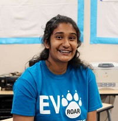
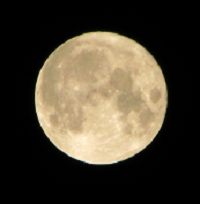
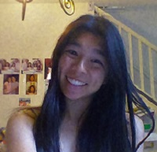

About the Officers

Hi! My name is Phanisri, and I’m the president and founder of the EVHS Newspaper Club. I started this club with a few other officers to try and bring a positive change throughout our school by giving everyone a voice. It has progressed rapidly, and I hope to accomplish even more this year :)) I also love debating, an activity that has helped me learn more about world policy and issues. Whether it’s the spoken word or written word, I respect both and am proud to contribute to the monthly newspaper editions that will
hopefully continue giving students a platform for expression!
Hi I'm Katie! I'm a senior in high school and unfortunately that means that this is my experience in this club is ending. I really enjoy taking photos because in my opinion, they can capture shocking aspects of an event or person, and can be used to express emotions that would be otherwise unconveyable. I truly believe in the phrase "a picture is worth a thousand words", and hope to further explore photography not only during my time in this club but also in college. I'm also a huge music nerd, and playing in a band is one of my passions.
I look forward to another year of excitement!

IMy name is William Gu. I am a current junior at EVHS, and the secretary of the Newspaper Club. I have been a member of the EVHS Newspaper club since my freshman year. As the 2nd place district winner of the 2017 Martin Luther King Writing Contest,
I enjoy writing in my free time. Other hobbies of mine include reading and playing the cello.
Hi! I am Pranati Modumudi, your Treasurer! I am currently a junior and have been a part of the Newspaper club since I joined high school. I love being a part of this amazing team and enjoy contributing to every bit of the newspaper, as a journalist, editor, formatter or an advice giver. Crazy enough,
I love math and writing and I hope to use these skills to be the most efficient officer. Outside the club, I also enjoy dancing, reading and hanging out with my friends. I love being a part of the Newspaper club and am honored to be your officer!
